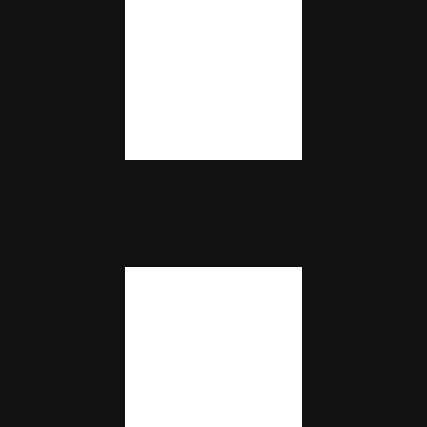

H-sib brand sheet
One mark for every H-sib app. The H stays. Each app adds one small thing and one accent color.
The rule
- The H never changes. Stems 7 wide, bar 6 tall, 10 between the stems, on a 24 by 24 grid.
- One small addition per app. A seam, a notch, a tick. Declared adds a stepped seam: the H is two halves of one token that only fit each other.
- One accent color per app. The changing half takes it. The other half stays silver.
- The plate stays. Dark navy rounded square, soft aura of the accent color, thin light rim, a little shadow under the mark.
Start here
template/hsib-plate.svg
The plain H on the plate. Copy it, add your one small addition and your accent color.

template/hsib-base.svg
The flat H on its 24 grid, with an empty variation group.
Declared
declared-icon-1024.png and the SVG. The app icon.
declared-mark-1024.png and the SVG. The mark alone, on any dark background.
declared-mark-black-1024.png. One color, for light backgrounds and print.
declared-mark-white-1024.png. One color, white.
Colors
Navy #0A0F1E
Plate #18244A
Silver #FFFFFF to #B9C6EE
Declared cyan #7BE9FF to #1C9BE6
Files
declared-icon-512-play-store.pngis the 512 by 512 icon the Play Store asks for.- The SVG files are the masters. The PNG files are exports of the same design.